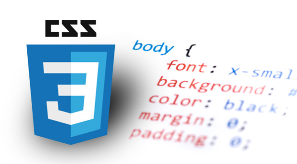

Cascading Stylesheet (CSS) is a style sheet language used for describing the presentation of a document written in a markup language. Although most often used to set the visual style of web pages and user interfaces written in HTML and XHTML, the language can be applied to any XML document, including plain XML, SVG and XUL, and is applicable to rendering in speech, or on other media. Along with HTML and JavaScript, CSS is a cornerstone technology used by most websites to create visually engaging webpages, user interfaces for web applications, and user interfaces for many mobile applications.
CSS is designed primarily to enable the separation of presentation and content, including aspects such as the layout, colors, and fonts.[3] This separation can improve content accessibility, provide more flexibility and control in the specification of presentation characteristics, enable multiple HTML pages to share formatting by specifying the relevant CSS in a separate .css file, and reduce complexity and repetition in the structural content.